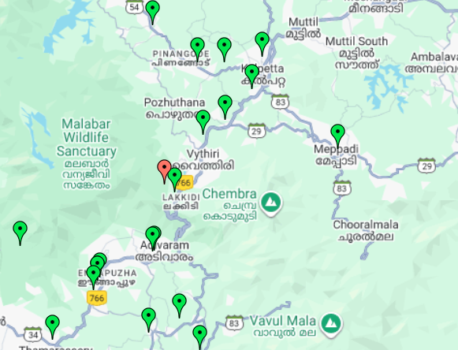

Instructions:
• Hover over any marker to see the location name
• Click on markers to navigate (replace # with your URLs)
• This map is fully responsive and works on all devices
• Green markers: Regular locations | Red markers: Special locations | Yellow markers: Highlighted areas